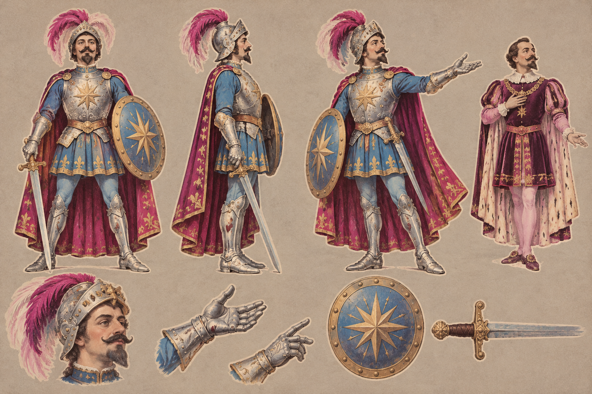

Prince Bel-Azor
char-bel-azor

Original request brief and named references
Prince Bel-Azor (a mature, dignified prince with a dark moustache and short pointed beard, played in the film by Méliès himself) in the enchanted armour Aurora gives him: a silver plumed helmet, a silver cuirass over an azure tunic, a sword and a round shield with a star; one small extra figure of him in his court dress for the prologue. He is the player character, so his silhouette must read clearly at small size. A character model sheet in the manner of Georges Méliès' 1903 film Le Royaume des fées: theatrical costume, deliberate stage gesture, early-1900s stencil-tinted colour (sepia-grey line and tone with translucent washes of plum #2a1424, rose pink #f3c6dc, magenta #e0127a, moon gold #d9b34a, coral red #c8321e, grotto teal #5f8c88 and azure #6f9fc8 laid slightly out of register), faint film grain; no lettering, no modern elements, no musicians. One full figure seen front-on, one in profile facing right and one three-quarter view, standing side by side at the same scale on a flat warm-grey card background, with two or three small detail sketches (face, hands, a key prop) along the bottom. Painted as a toy-theatre cut-out: gouache on card with a faint pale cut edge, no cast shadow.
No image references; text brief.